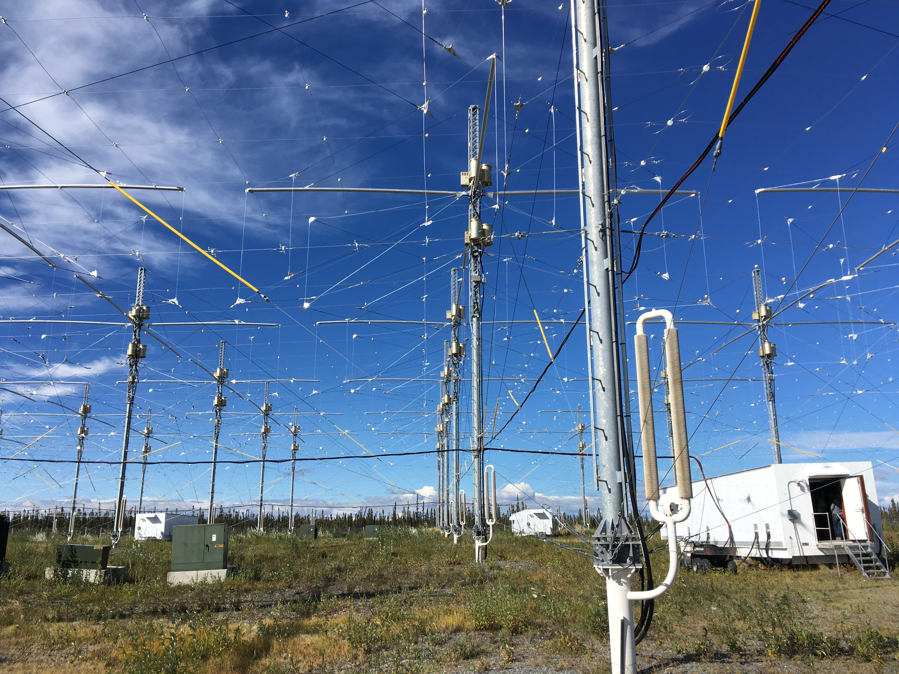

Le site du projet est situé dans la région des aurores polaires, c'est-à-dire là où l'ionosphère est la plus sensible aux activités solaires. Son principal outil est l'IRI (ionospheric research instrument). Cet IRI est un puissant émetteur d'ondes radios hautes fréquences à travers un réseau d'antennes an phases (180). Ces antennes sont disposées en 12 rangées de 15 couvrant ainsi 12-16 hectares. Lorsque le dispositif et mis en route, un signal radio est émis vers une zone de l'ionosphère. Cette émission a pour effet de chauffer cette ionosphère, phénomène observable naturellement, mais qui est ici provoqué artificiellement. L'interêt d'un tel dispositif est d'observer sa réaction lors de cet échauffement et donc de comprendre les caractéristiques et le comportement.
Selon wikipédia: Une antenne élémentaire en émission, dénommée également doublet électrique, est constituée d'une petite longueur de conducteur dans lequel circule un courant alternatif. Une telle antenne élémentaire n'existe pas. Une antenne filaire réelle quelconque sera considérée comme constituée par la juxtaposition d'antennes élémentaires, et ses caractéristiques seront obtenues par l'intégration des champs élémentaires, sachant que les caractéristiques du courant dans chaque élément sont différentes en amplitude et en phase. Une antenne cette fois réelle, que l'on peut ainsi construire, est l'antenne doublet demi-onde, encore appelée dipôle demi-onde.
Une antenne est un dispositif permettant de rayonner des ondes magnétiques (c'est-à-dire d'en émettre): on parle alors d'émetteur.
Dans le cas du Projet HAARP nous nous intéressons à son fonctionnement en émission.
Une antenne est constituée d'une juxtaposition d'antennes élémentaires elles-mêmes composées d'une petite longueur de conducteur dans lequel circule un courant alternatif. Le courant alternatif passant dans ce conducteur va créer une onde électromagnétique (voir animation), qui, combinée aux autres vont former un signal radio. (ensemble d'ondes radios)
Selon wikipédia: "L'instrument principal de HAARP est l'IRI (ionospheric research instrument) dont la conception est en partie due au physicien américain Bernard Eastlund. L'IRI est un puissant émetteur radio à haute fréquence qui utilise un réseau d'antennes phasées comportant 180 éléments de type dipôle pour étudier l'ionosphère. Les antennes disposées en 12 rangées de 15 antennes occupent une surface de 12 à 16 hectares. Lorsque l'émetteur fonctionne le signal radio est dirigé vers une zone de l'ionosphère, située à une altitude comprise entre 70 et 350 km, dont le diamètre est de quelques dizaines de kilomètres et d'une épaisseur de quelques mètres qui est légèrement échauffée. Cet échauffement crée des perturbations similaire à celles produites dans la nature mais de manière aléatoire et souvent difficiles à observer. L'avantage de cette technique par rapport à l'observation d'une perturbation naturelle est que sa position et son déroulement sont contrôlés et que l'expérience peut être répétée."
À l'origine les objectifs du projet HAARP sont d'origine scientifique, en effet le projet a pour volonté de comprendre les mécanismes régissant l'ionosphère. Cependant, on s'aperçoit rapidement que le projet est financé par les forces armées américaines (US Air Force) et que des documents militaires en parlent comme une arme potentielle. On peut donc très largement douter sur les réelles intentions des dirigeants de ce projet et on peut d'ailleurs très largement comprendre quelles utilisations militaires les États-unis pourraient en tirer: notamment le fait que l'ionosphère sert de "miroir" pour les communications radios (qui représentent la quasi-totalité de nos moyens de communications). Pour plus d'exemples d'utilisations militaires nous vous conseillons de visiter notre rubrique "ARMEMENT"